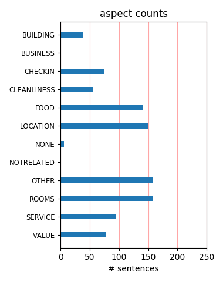
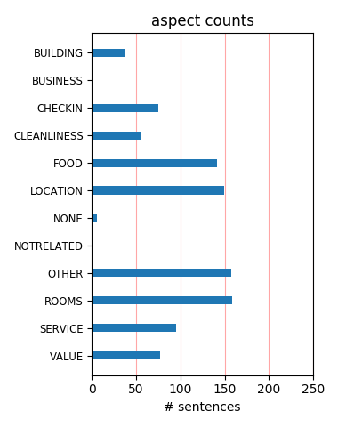

We stayed for one night after a family wedding so didn't get to use much in the way of hotel facilities. Managed to find a very good rate on the web. Lovely modern, clean rooms for less money than you'd normally pay for a B&B.
Very nice and modern hotel. Globe Bar food at the hotel was shocking good. Very close proximity to Gunnersbury subway line which can take you everywhere in London. Buy a whole day pass costs around 10 USD if planned to use the subway more than 5 times per day.
All the staff are friendly and helpful and the rooms are amazing the breakfast offer a wide range of cold meats, pastries and cereal for continental but they also offer a hot buffet too. Only stayed for 2 nights but from what I gather your rooms would also be cleaned every day!
Stayed here on business. A clean modern lobby with a bar that looked like it can be quite busy at times. Room was clean and fairly spacious by London standards, although the furnishings suggested Austin Powers. Staff was helpful and courteous. I will stay here again wen I return.
The Moran is a good place to stay, it is not far from the aiport and offers decent rooms with basic ameneties and services, the restaurants are not great or value for money but there are a lot of eating planes around. It is not in centra;l London and I wish the rooms had a refrigerator
Stayed here several times over the past year and each stay has been good. A nice, clean, efficient hotel, decent restaurant. Perfect for business trips due to location and good safe feel for a single female traveller. Would recommend to anyone looking to stay in London but it does get booked up fast.
I stayed at the Moran on business and was unimpressed by it. It is an unfriendly hotel and although it is advertised as having a gym/ spa, both are a short walk away. Not at all conveniant. The decor was chilly - mint greens and pale blues, and the rooms were small. It wasnt what i expected for the price my company paid. Very disappointed.
Excellent family room (best we've found in London hotels), and overall a very high quality establishment. Breakfast was good (buffet on Sunday, table service on a Monday), and the hotel is very well located for buses, tube and taxis. Tiny quibble - the shaving mirror (in the excellent bathroom) is located at an angle to the washbasin - I ended up with a crick in my neck !!!
Just an overnight stay but I was very impressed by every aspect of this fine hotel. Especially the warm and friendly staff. They made me feel very welcome and unlike a lot hotels in London where the staff act like they are doing you a favour by letting you stay there! The rooms are spacious and very comfortable. Would have every confidence in recommending this hotel to anyone.
Thanks to all at the Moran Hotel. We had a great stay on the Valentine weekend. Rooms comfortable, service was excellent, nothing too much trouble. We will come and stay again when back in London. Not sure were the person was staying from the last guest comment. Breakfast was hot and we had plenty. However, very busy as the hotel looked full, but all staff were helpful and served us in an accceptable time.
I stayed here for 1 night after an office party. I booked a double room for 2. One thing that did stand out to me is that the room was a little small. But that's fine. It's 1 night! The room was clean and there were enough towels and pillows. The shower is great! Check-in is extremely quick. Staff are polite enough. In the past, I have had the odd drink in the bar downstairs, which is pleasant. Overall. Good.
I stayed at the Chisick Moran for a weekend break in London. It was my first time staying, but it had been recommended by a friend. It is very handy coming from the M4 and the parking was straightforward and secure. The staff were friendly and helpful and the rooms were clean and comfortable. The bar had a nice atmosphere in the evening and the food in the restaurant was excellent. I'll certainly be staying again.
We stayed for one night only and it was chosen by my brother for a base for a family get together. It is what it is; a good functional hotel convenient for west london and Heathrow being very close to the tube and direct road access almost from the door. The room was clean and spacious and the cooked breakfast served fresh rather than a buffet under heat lamps. The staff were friendly and I would certainly go back.
We went to Twickenham to watch England V Wales and booked the Chiswick Moran. We had been upgraded to a suite and this was fabulous. We had lunch in the friendly bar which had a laid back feel to it. The room was superb. Breakfast was a full Irish and the fruit bar was fresh and enticing. The staff were friendly. It was such a shame that we only used the hotel as a base. Next time we will make use of all the facilities.
We stayed here on a weekend whilst visiting London, it was clean excellent facilities. It was straight off the M4, parking was very reasonable, close to tube stations and a bus stop outside which was a pleasent ride too Hammersmith. Good choice of restaurants in Chiswick which is a twenty minute walk. We booked direct with the hotel and got a better deal than any of the hotel booking sites, we also got a full English Breakfast
We needed to stay a night at the Moran while our flat had some work done and we were not disappointed! Although the hotel is not cheap, the room we had was large and ultra modern. The bed was very big and well made and the bathroom was very clean and nicely done. Honestly, it was one of the nicest hotel rooms I have been in, and I have been in a few! The bar downstairs is also nice and if you need to stay in Chiswick then this is an excellent option.
We have stayed here twice now, both times very enjoyably. The hotel's communal areas are lovely, the staff very helpful, and the continental breakfast very good as well. Rooms are clean, spacious and comfortable. Gunnersbury tube station is just across the road, and you can be in central London in 20 minutes. It's also very close to the A4/M4, so visitors from the west can get home again easily. We would definitely continue to stay here when we visit London.
Staff very helpful and polite. A high standard of facilities decor and cleanliness. Family room very comfortable and spacious. Good selection of breakfast on offer. Safe parking and reasonably priced for residents of hotel. Underground a short walk from hotel with good connections into Central London. Very impressed with our stay here, we will definately stay here again. Excellent value for money. Very quiet when we stayed thanks to the volcanic ash grounding all the planes.
Spent Easter at the hotel. A socalled executive room, only difference was that bathtub and shower were separate, hmmm, no big deal, not worth the extra pay. No windows can be opened in this hotel probably due to an extensive airconditioning system, which by the way neither me nor my friend were able to operate from our rooms. Luckily it can be done via the reception. Constant bass-sound of an engine as if you were on a ship. Otherwise fine. Nice continental breakfast. Would go again another time.
We have stayed in the Chiswick 3 times now and we will be coming back. I will never go anywhere else when I go to London. We park our car on their parking and travel by tube, the Undergroud station is almost across the road. The rooms are spacious, beautifully decorated with superb beds. The second time we had a familyroom (we were with 3), that one had a double bedroom, bathroom and an extra bedroom for our friend. Excellent. The breakfast is good, staff is very friendly. You do not have to look any further!
Overall, very good value for the money... It was extremelly cheap for the service that we recei.ved. We felt very safe in that area of London, the room was big and confortable, and had everything we needed. Everything was clean, and the hotel is relativelly new, so everything is in good shape and the design is amazing! You feel like you are in a modern high quality accomodation with views over the sky (we were on the 6th floor seeing the airplanes passing!) ! Would higly recomend it and will definetelly stay there again..
My husband & I went to watch rugby at Twickenham and stayed at this hotel. It is very convienantly located, very close to the train station and only 2 stops away from the Twickenham rugby stadium. The hotel itself was awesome! Very clean room and we loved the decor!! Very modern!! We enjoyed the fluffy duvet, soft pillows and the spacious bathroom. Very, very nice room! Staff was very friendly and effecient. Breakfast was YUMMY!! We liked the hotel from the minute we set foot in it! Overall, a GREAT stay and we'll definately be back!
Wow, what can I say. Stayed at this hotel for a girls night away (from Bristol) in a triple room. Firslty the rooms are huge and spacious and the design of the triple gives the feel of two seperate bedrooms. Absolutely fantastic for 3 girls getting ready for a night out ;o) (Or a family) Stunning design through out. Been to London many, many a times and now I wouldn't even bother looking for other hotels. Staff were fantastic and friendly. Bar was buzzing in the evening and food was fab. Thank you for such a fantastic night away!!! Will definitely be back.
I booked this hotel based on its location, which is right next to a very upscale business park where I was going to spend 3 full days. I found the room ample and functional, the bathroom was also very good. A nice place to crawl back to after a stressful day's work. I especially enjoyed the opportunity to eat dinner at any of several ethnic restaurants located on the Chiswick High Road, easily within walking distance from the hotel. A few minutes to the NW of the hotel lies Gunnersbury Park, which proved an excellent solution for a 30 minute run before dinner.
Stayed at the Moran for 2 nights at the end of July .Service from all the staff was excellent.Food in the restaurant was good and plentiful Good selection for a buffet breakfast.Stayed in an accessible room that was very well equipped only problem was a sink that no plug would fit Well situated for Kew and the tube good taxi service and bus links. Only problem was the disco in the evening on Friday and Saturday in the bar the music was very loud it was hard to hear yourself speak and only one or two dancing.Apart from that it is good value.Good free disabled parking.
My husband and I stayed here for leisure. Living in Las Vegas we come accross some fine hotels. In comparison, we were very impressed with this hotel. The staff was very helpful and friendly! The room and bathroom were spacious and clean. The restaurant was like fine dining and the food was delicious & plentiful! The location was perfect in a nice area and away from hustle and bustle of the city, but near the Tube (Gunnersbury Station). The only thing I would recommend is for the hotel to get pillowtop mattresses. Other than that, we would definately stay here again!
Stayed at this hotel for 4 nights. It is nice and clean but nothing exceptional, would not call it 4-star. Being spoiled by American hotels, found room to be a bit too small. Breakfast (was included in the rate) is also just OK, nothing really to talk about. Chiswick is at quite some distance from the Central London. Subway station is very close, and it is a direct line to the downtown. Takes probably about 35-40 minutes by subway to get to the main London attractions. Service at the bar in the evening is very uneven. Somtimes it was fine, sometimes not so good at all.
Have stayed at the Moran perhaps 30 times now over the last 4 years and have never had a bad stay. The staff are great and we are treated like locals. The rooms have a funky design and so good that we tried to use some of their ideas in our new house. Bar can be hopping at night and room service is very good. Breakfast is also good. Only fault is perhaps too many functoions that go on pretty late. Only get wi fi on first fllor and lobby which is a pain and should be fixed to make it totally excellent. Difficult ot get a room so book in plenty of time, especialloy mid week.
Good bits Good decor, comfy big bed, quiet at the back of the hotel, clean, light, low light for night use in the bathroom, nice selection of fresh fruit at breakfast, lots of wardrobe space, TV speaker in bathroom. Not so good bits Style triumphs over practicality- Black lampshades on 'reading' lights, hairdryer fixed at opposite end to mirror. Over bath (and not very good) shower.'Make your own' tea at breakfast with flasks of not quite boiling water. No biscuits in the room.Would have expected more service at breakfast for the price. Very pricy internet access. Very small gym.
This is a very bizaare hotel. On arrival you feel that you are in a mid european star hotel. The welcome from the front desk was OK, but unfortunately our room wasn't ready when we first arrived. We left our luggage and went out for the afternoon. We when arrived back the room still wasn't ready and they couldn't find our luggage! Eventually we reach the room, which was lovely. Everything you needed in a modern contemporary style. Cozy bed, big bath, modern shower and nice magazines. We liked it. Its worth staying in for the room, but if you want good service and nice food, then perhaps not the best.
My wife and I stayed at the Chiswick Moran for a weekend break while taking a course at the London School of Diving (which is just around the corner). We took advantage of a special offer for a junior suite for 2 nights, breakfast on both mornings and dinner in their restaurant on one day, all for £250. The room was very large and very well decorated - both interesting and stylish, but also practical and comfortable. The restaurant was excellent and the hotel was generally very good. Breakfast was also good. We couldn't believe the price and kept thinking it must have been a mistake, but it was real!
Stayed here for just the one night and, to be very honest,we did not spend that much time in the hotel but whilst there the hotel staff were very polite and professional. We booked a "Twin Room",but we were given a "Double".Not a problem as it was changed immediately.The room was spacious and very clean.If you wuold like a quiet room,we would suggest you ask for a room at the rear of the hotel.(Didn't bother us,we could sleep on a runway) Great location.Five minutes to Gunnesbury station and a10 minute walk into Chiswick high street. NB.Got this hotel off "Top Secret Hotels"...£70 Room only..BARGAIN!!!!!
Lovely comfortable room - very well-equipped, cosy bed and some stylish touches in the room decor. I got a deal online and paid just £100 for a double at the weekend which seemed really good value to me. The staff were very pleasant and helpful - even when we managed to throw red wine all over the pristine white quilt, they were charming about it and changed it for us straight away. I would definitely recommend to anyone wanting a nice, safe place to stay in West London. It's a bit of a way out from central London but Chiswick itself has plenty of nice eateries and bars, so for anyone who wants to be based this side of town it's a great option.
Stayed at the hotel last October on a stay over in London. Plenty of parking spaces on a weekend , easy to find and also near the tube station. Rooms excellent, breakfast good with plenty of selection - irish breakfast - the full works - superb. Love the super ultra mod shag pile carpet in the rooms, beds really comfortable and not disturbed at all from the busy road it on, never heard a thing! The bar area "The Globe" very trendy, few celebs knocking around . Receptionists a little slow so if your in a hurry to check out then go before the rush hour at midday, was stood there over 15mins waiting . Would def stay again as very good value for money.
The room was very comfortable and quiet (even though I was near the elevator). The bathroom was magnificent. The lounge was a great place to take advantage of the free wireless Service was perfunctory. With the exception of a wonderful person behind the bar, no one smiled. Breakfast on Friday was excellent, smoked salmon and perfect eggs. Then on the weekend,a buffet. I showed up early at 7:30 and it was already overcooked and underwhelming. Such possibilities lost. The coffee was very tasty. I wish there was someone walking around refilling it. The area is very easy to navigate. 4 buses stop in front of the hotel. Gunnersbury station is 2 blocks away.
Stylish hotel with very modern rooms as was the trendy hotel bar.Don't be put off by it's west of the city location - it is 5 mins. walk to the river and Kew green ;5 mins. to Chiswick high street and it's myriad of tempting restaurants;2 stops on the tube from Richmond (Gunnersbury tube station is 50 yards) and about 20 mins. by tube straight into the city.Having stayed in some ropey hotels in the city in the past (and paid good money for them) this hotel was excellent and I can't sing it's praises highly enough.I'll be going back there each time I'm back in London - it's location is a virtue as there are no tourists in the area but just fashionable Chiswick/Kew locals.
I stayed here for five nights. I was on business and was given the option of a number of hotels and chose this one because it was the closest to my work. Apart from that it was close to absolutely nothing and I nearly died from boredom in the evenings. It is close to a tube station but I spent an hour and a half getting to central London one evening. I had an executive room so I really cant compain about the hotel. The room was big, bright, spacious, modern and luxurious as was the bathroom... it was everything you could expect from a hotel of it's standard. I enjoyed the complimentary breakfast also. My only complaint is that it isnt really near to anything of interest.
We staying in the Chiswick Moran on 24th February for 2 nights having driven down from Manchester and having had stayed at the hotel on 2 previous occasions. Arriving late on the Friday night we ordered food in the Globe Bar - sadly the service was extremely slow, and they weren't that busy. The music was loud in the bar,and seemed to be catering for locals rather than hotel staff. It was almost impossible to have a conversation as the music was so loud. The Saturday night we opted to eat in the restaurant - but again extremely slow service. Not what we had experienced on our previous stays. Again music playing in the bar on the Saturday night - though not quite as intrusive.
We stayed at this hotel so that we could take in the various attractions of London including a visit to watch the Wizard of Oz. The location is more than perfect with the nearest tube just a very short walk from the hotel. £7.30 for a day traveller ticket to go anywhere on the tube or buses. The room was fantastic and modern and very clean. Did have WiFi but this cost extra (shame). Even though some construction work was taking place on the big building next door the rooms were totally soundproof not a single noise heard. Breakfast was very nice and the staff very helpful. I would recommend this hotel to anyone and we will definately be staying there again throughout this year. Can't wait.
Arrived early, not a problem to the very friendly and efficient staff, was allowed to leave car in the car park, came back about 5 to check in properly. Room was large and clean, comfy large bed aided a good nights sleep, no view from room but others in our party did. Had some food in the bar which was very good, had several different options between us and all were happy with our choices. Breakfast was of an equal standard The location is fantastic, a few minutes off the M4 and you are there, it is 200m to gunnersby tube station and 30 minutes to cental London, there are a few local shops and pubs. Overall i was happy that i stayed at this hotel and will stay here on future visits to London.
We stayed in this hotel for a long week-end and couldn't belive how lovely everything was..the room, the staff and the location were perfect! We got a great rate from GTAHOTEL.COM, do not book with the hotel direct. The location of the hotel is really good, only a few minutes walk from Gunnersbury Tube station and several buses to and from the city centre, stop just outside the hotel. We only used the restaurant for breakfast so we can't judge the food quality, but the continental breakfast was nice. Chiswick highstreet however has lots of great restaurants ( Franco Manca for the nicest pizza) the Persian restaurant beside it and the great ice cream parlour only a few blocks from the pizzeria..
Well appointed retro style modern rooms (with huge modern clean bathrooms) in a good location on Chiswick high street. Easy to drive too & park at - parking is reasonable for London at £10 for 24 hours. The tube station is just across the road - less than a 2 minute walk which is very convenient for getting about (the tube does take approx 30 mins to get into the main city centre). Good value for money (our rate included continental breakfast but we did pay £5 pp to upgrade to a full English which was worth doing for the extra) in a good location for getting to central London & surrounding areas. Very handy for Heathrow airport too. Would fully recommend staying here & intend to use again when visiting London.
We stayed here for one night purely on account of the fact that we were attending an event locally. For the price we paid we were very happy with the stylish room and were pleasantly surprised by the size / décor / facilities. Check-in and check-out were very quick and the staff courteous. We didn’t ask them for anything so I can’t comment on their local knowledge or efficiency, nor did we eat in the hotel. Chiswick is not a tourist centre, so if you are visiting London you might find the hotel’s location somewhat remote. However, it is well-connected with tube / railway stations approximately 2 and 10 minutes’ walk respectively and probably offers more than you would get for the same price closer to central London.
Very nice. Comfy beds, nice breakfast and good location. The hotel is on the district line, so was very easy to get to Kensington, Earls park etc and easy to access tube to the west end. I did notice that the staff kept getting abuse from customers. They remained polite even when I had had enough of people moaning all the time, and wanted to tell them to shut up myself lol. Breakfast on the Saturday was continental and £5 each extra for cooked, but all was included on the Sunday for no extra charge. Bathroom was funky although the shower appeared to have no head. This is the way they all are apparently. We think that because the pressure is so great the head probably flew off. Only complaint is the parking is a rip off!
Stayed for single saturday night on St Patricks day. In London to watch the rugby at Twickenham and this hotel was perfectly positioned. Its about 200m from Gunnersbury tube on the District line. The Moran is modern and friendly with nicely designed rooms, plenty of storage space and comfortable beds.The bathrooms are modern and well equipped if a little strangely decorated. My room was very slightly battered, but in no way did this take away from the overall good impression. The bar was buzzy and a nice place to spend a couple of hours. We didnt use the restaurant We booked through Lastminute.com secret hotels, but had worked out which hotel it was before paying.The room rate was very goodvalue and I will definately return
I can certainly recommend this hotel. My husband and I stayed for one night this weekend as we were visiting the Royal Botanical Gardens at Kew. The hotel is very comfortable, extremely clean and the staff very friendly. The rooms were an excellent size, but on a personal note, I found the pillows a little too hard. There was plenty of choice for breakfast although would have preferred more choice with the bread other than ordinary sliced, such as baguettes or rolls or as in some continental hotels uncut bread that you can cut yourself. It would also have been nice to have been given the option of a cooked breakfast but we didn't realise you had to ask for this until it was too late. All in all though we would return to this hotel again.
We stayed at this hotel for one night and it was beautiful, we booked it as Lastminute.com's Luxury top secret hotel for £50. It is very close to the tube station and it takes about half an hour to get into central london, changing at hammersmith. We were shown to our beautiful room, (231) it was relatively compact but good things come in small packages. The bathroom was amazing a lovely big bath as well as a double shower on the opposite wall. We asked for hotel robes that were sent up immediately and when we ran out of tea we called and asked for more and they came up with a big bag full of coffee and tea and milk. The only thing I would advise is that the food in the hotel is very expensive so I would advise having dinner somewhere else.
Modern, comfortable hotel, probably one of the few in this area. Well maintained big rooms and lobby, very popular bar and an average restaurant for fine dining (Napa). Advantages of being close to the Gunnersbury Tube Station and Chiswick Park, many eating places and shops on Chiswick High Road. Gym is a disappointment - has a creaky machine which tries to simulate mountain climbing. No cross trainers, but 2 good rowing machines and some weights. Too small and cramped. Meeting rooms are functional. One has stayed here many times, but the staff don't really recognize you. Decor is a bit non-conventional, can't say I like it. Garish is probably the word for it. But the comfort makes up for other shortcomings. Goes full quite often, needs to be booked in advance.
Stayed here in May with a group for my brothers 30th- fabulous hotel, spotless, trendy cant fault that.The bar staff-rude,slow and unhelpful.Waited over half an hour for an unbelievably overpriced bagel which was the wrong one when it finally arrived, when I said this to the waitress she tutted and grabbed the plate and left me waiting another 10 minutes.That evening we all had drinks in the bar, slow service unpleasant staff.Reception staff were quite nice, although I asked to speak to a manager when we were checking out to complain about the bar staff and was left waiting in reception for 15 mins had to leave then as taxi to airpost arrived.The bar and restarant of this hotel let it down with a bang-dreadful staff.However beautiful hotel and reception staff were lovely.
My husband and I had an extremely enjoyable stay at the Chiswick Moran Hotel in West London. The hotel staff were extremely helpful and friendly. The bedroom was very comfortable and spotlessly clean. The food was good and dining room very pleasant. The hotel is just off the North Circular in Chiswick - it was easy to find and is convenient for public transport, tube and buses. Gunnersbury Tube Station is a few minutes walk away. Chiswick is just up the road, where there are some lovely shops and restaurants. The Chiswick Moran is the perfect base for a stay in London. It was a great weekend - sightseeing, shopping and a visit to the theatre and then to return to the quiet and comfortable calm of the hotel was absolute bliss. We have never stayed at a better hotel in London
We came here for a weekend stay. Rooms and bathroom were very nice; spacious, comfortable and clean - shower pressure was not good at all however; didn't bother me much as I prefer a bath but imagine it might bother other guests. Maybe it was just our room. The only things I have to gripe about are all the hidden extra costs - room service and food I think is extortionately priced for what it is. Don't eat at the restaurant - if you walk down Chiswick High road there are some excellent restaurants that are very reasonably priced. I can particularly recommend Faanoos restaurant, a persian place. We had two starters, a mixed grill for two and wine for just thirty quid between us, and it was absolutely delicious. So to sum up, nice hotel, but the food is overpriced and sub standard.
Booked two nights via Last minute. Excellent value for massive room- one super king size and separate 'area' with single bed. Bathroom wonderful, walk in power shower and big bath. Clean and comfy. Breakfast not included, £15 for full 'irish' or £5 for sausage or bacon roll. Had the roll the first day- tea/ coffee included but uninspiring. Walked 7 mins down road to a fab cafe second day and got full English for £4.95- wonderful! Why they don't charge less for breakfast at the weekend when it's sightseers not business people I don't know! 3 mins walk from Ginnersbury station on district line, 20 mins into centre London from there. 20 mins walk past tube station to lovely area with lots of shops, cafes if you want something different to eat. Would stay again now we found a breakfast cafe!
I simply don't get the negative reviews here. My room was spacious, recently refurbished, spotlessly clean, well equipped and extremely comfortable. The staff were friendly and helpful. The double glazing cut out most of the traffic noise and I did quite like seeing the planes in the distance (silently) headed towards Heathrow. The food was quite good - and 2/3 mornings tea and toast were delivered to my table together with my order. To get all this in a four star hotel at around £100 including breakfast was excellent. Would certainly stay again. Just a few minutes walk from District Line and Overground at Gunnersbury makes this a convenient and good value alternative to city centre hotels. Also short walk (20 mins?) to Kew pier and Kew Gardens. Quite simply the best hotel for this price that I have found in London.
Due to bad weather I ended up staying an extra night in London. Luckily I manage to book a executive room (129 pounds including breakfast) at the Chiswick Moran Hotel. The Moran hotel in Chiswick is recently opened (2007) and is decorated in a bright (my room was lime green), modern style. Very large room with two reading chairs. Bathroom had both walk-in rain shower and bathtub. Lovely dimmer lights in the main room for a relaxed feel. In room kettle for coffee/tea making. Breakfast is adequate - small selection of cheese and meats, toast and 1 other kind of bread, cereal, the usual continental stuff. Some niggly points: stain on carpet in room (otherwise very clean), expensive Internet (3 pounds for 30min). Chiswick highroad is a very noisy road, would always recommend to stay in one of the rooms not facing the street in Chiswick.
We booked the Chiswick Moran through TravelRepublic three months in advance and got a double room for under £80. What an absolute bargain. Just 15-20 minutes into the centre of London by tube (Gunnersbury tube right next to hotel), so well positioned if you're prepared to stay a bit outside the Zones 1 & 2. The hotel is excellent; decorated to a very good and modern standard. The room was clean and had a large comfortable bed. Small Plasma telly. We only stayed the one night but would have no hesitation in staying again. The Breakfast was ok, nothing exceptional, but was included in the price so a definite bonus as many hotels and B&B's nearby charge extortionate amounts for the privilige. The staff were friendly and helpful and spoke excellent English, which we've found on many occasions in London to be a big problem. Overall, we would recommend this hotel without question.
On first impression the Chiswick Moran is very nice - helpful reception, nice room, easy walk from the tube. However we experienced very bad service when we enquired why there wasn't any hot water on Friday evening. Our first call to reception was fine - he apologised and said maybe in 30 mins it would be fixed. Still no water after an hour so we called again and this time a lady answered and she said the hotel was full and it was only to be expected that there would be no hot water and then she hung up after saying she would talk to her duty manager. We didn't get an apology or a call back. In the end we boiled the kettle and used that for 'showering' (ie. a wash in the sink). Next morning the hot water was lukewarm only. Glad we paid much less than the rack rate for our 1 night stay. Would not go back, esp on a Fri or Sat night when the hotel would be more likely to be full.
We (myself and my husband) have today returned from a 3 night stay at the Chiswick Moran. I booked this hotel mainly due to the reviews on this site and was certainly not disappointed. The decor was brilliant and the standard hotel room we booked had a huge bed which was really comfortable - could not fault the room at all although I have to say that the shower could have been more powerful. It was a rain-type shower and due to the fact that I am only 5' tall, by the time the water reached me it was more a sprinkle than a shower! Overall the hotel was lovely - friendly staff, good food in the restaurant even though the menu was not extensive. Breakfast was not the best we've had but was adequate. Getting out and about was no problem at all and the city centre was a 20 min. tube ride away. I would absolutely recommend the Chiswick Moran to anyone and would certainly stay there again.
I stay at the Chiswick Moran on business due to its convenience to nearby offices. It is quite adequate for that purpose, with spacious rooms and a decent onsite restaurant. I appreciate the comfortable bed, plentiful desk & closet space, large bath with walk-in shower, separate tub & night light. Breakfast is average. I wouldn't consider this a particularly good choice for leisure travelers, as it's halfway between Heathrown and the city center, in Zone 3 of the underground. The worst feature is the dreadful carpeting in the rooms - ugly, dirty stained shag. The remote control won't turn on the TV, and there's no in-room safe. The other annoyance is the hairdryer mounted in the drawer of the desk, an awkward location. I wouldn't hesitate to recommend this hotel for business travelers or anyone particularly wanting to be in this area, and if they would spruce it up a bit it could be lovely.
We stayed at this hotel as it was near access to the M25 and we were driving down from Yorkshire and had parking for our car (£10 a day). It was also near the district line (Gunnersby stop) which we needed as we were going to Tate Modern and also to see a band in the evening. The rooms were clean, had free wifi, good size bathroom with bath (for a London hotel). We were at the fornt of the hotel on 2nd floor but despite this we didn't hear much road noise at night. The staff at reception were very helpful. Breakfast which was included was continental and was good value - cooked was extra. We didn't have time to use the gym. We did use the bar where the service was good, good range of beers draft and bottled. The bar meals had a good selection and again the service was good despite being busy. We did not use the main restaurant. We are back in London in January and will be using this hotel again.
This hotel was a great deal through booking.com. Got a flash deal at $85 Canadian per night. The room was spacious, clean, beautiful design (see photos) and fairly quiet, despite being next to the elevator. Travelling throughout the UK, we got used to being greeted with cookies and tea with each hotel we stayed in. However, there were no cookies in this hotel. So, late one night when we returned to the hotel, close to midnight, we asked at the bar if was possible to get some cookies or pastries to go with tea before we went to bed. The bartender, a young woman, who seemed kindly amused by my request, said no problem, even though the kitchen was closed. She came back with a generous full plate of assorted shortbread cookies and said no charge with a warm smile. We were very touched by this. It is this type of kind and spontaneous gesture that truly stands out amongst all the things you notice when on vacation.
This was a business stay of 3 nights and was most convenient for the underground. I occupied a small double for myself and there was everything I would have expected to a high standard I did have a few challenges with aircon but reception helped me out at once. Breakfast was lovely and I had some continental with either scrambled or poached eggs. One dinner in the resturant and two in the 'footballers wives ' bar which was really yummy. there was also a nice terrace to enjoy a drink in the evening sun . could have done with a pool....but there is an oppourtunity to go to a nearby hotel for a swim at a small surcharge. The high street was leafy and wide with nearby parks and a couple of nice convenience store for WW for the room...ie wine and water If you are a fan of Strictly ....some of the dancers were there including Edwina Currie who looks much fresher that she does on telly I would definately stay here again
We chose this hotel because of previous reviews. Let me get the basic details of the hotel out of the way. Nice large room for London, clean and modern with good facilities. The service, oh dear, rubbish, particularly at breakfast time, a half an hour wait for inedible food. We complained but I guess they get this all the time as it just washed over the staff and management. The location, this is what lets this hotel down for a London break, on the sunday it took us nearly 2 hours to get there from Kings Cross, ok there were certain tubes not running, which isnt the hotels fault, but the location impacted greatly on the travel time. Because of this we stayed in Chiswick sunday night, found a great pub called the Pilot by the way, and most of monday until we ventured into London to see Oliver, which took 50 mins each way. So to summarise I would avoid this hotel for a London break if you like to be amongst the buzz.
Stayed 2 nights at the Chiswick Moran to attend a friends wedding at Kew Gardens and I am soooo glad that we did. Its a cracking hotel which, if it was in central London would be far more expensive. We were booked into Room 425 which was a lovely spacious room, albeit set up for disabled guests-although that meant it was very spacious. The carpet was lovely and the room was very modern and well designed. It is only about 400m away from Gunnersby Tube station and ideal to visit Kew Gardens and about a half an hour away from Hampton Court-it was ideal for our needs. The bar is lively and when we stayed (Fri and Sat) had a DJ playing which gave a great atmosphere with some cracking bar staff to boot! Only had breakfast the first morning (was severly hungover on day 2!) but it was good 7/8 out of 10-its a help yourself style buffet but no baked beans : (. We had a lovely evening meal on the first night selecting the set menu which at around £17 for 2 courses was good value for the food.
I was recommended the Chiswick Moran by my son and was not disappointed. It was ideally located for our family celebration at Dukes Meadow Golf Club and although I was on my own when I arrived ,I was joined by other family and friends, who had decided to use the same hotel. We all agreed that it was of a high standard and excellent value especially at the special rates we had found. All the amenities were of a high standard and I loved the retro feel to the decor. Most notable was the staff , for whom nothing was too much trouble. There was a friendly yet efficient and air to the hotel that really made us feel welcome. The only negative comment was that I could not find a shaver socket in the bathroom to recharge electric tooth brush. Next time I will bring an adapter for the main socket.in the bedroom. Fortunately I was only staying two nights and the toothbrush held out!! i feel sure that the wonderful staff would have supplied me with a solution had I needed it Thanks to all. We had a great time.
Just back from the Chiswick Moran 10th - 13th August. This was a trip to London for my daughter's 18th, and so we had her and her sister and two other young ladies who were friends of the girls. In all we had 1 x double and 2 x twin rooms. The rooms were lovely and spotlessly clean. We had a bed & breakfast deal and so the early morning meal was a nice way to set us up for the rest of the day out and about in London !! (As an aside Wicked was, well, wicked, and Avenue Q was very good too). Back to the hotel, the staff were most friendly and when one of the girls couldn't open her safe the engineer was there within 5 minutes and had the matter resolved. For the evening, drinks not too pricey and room service which we had in the lounge one night was quick and tasty, and not too dear. For people coming from Gunnersbury Tube Station, turn left as you go through the barrier and you are just about 250 yards from the hotel which is on the right side of the road, so you'll have to cross over. Would I stay here again - definitely.
Cannot fault the room, it was spotless, trendy and comfortable. Massive shower room. Friendly staff on reception , early access allowed to room. Usually stay in central London and tried here for a change. Good access to Chiswick High Street which is well worth a visit, and underground network for getting into the City to see a show. Went for breakfast forty minutes before it was due to finish. No pastries / rolls left. Staff informed us they couldn't make any more as they took twenty minutes to bake despite later guests requesting some too. Same problem with items on the cooked breakfast. No sausages, diners having to wait till more were done. Tables were also left uncleared . Staff who were in the dining room appeared busy but no one appeared to be in charge and delegating duties. It's not good sitting at breakfast surrounded by masses of other diners debris. Would stay there again despite chaotic breakfast room. Maybe it was an off day. Don't be put off !!, this had the makings of a superb visit - spoilt by the lack of leadership in the breakfasting area. Easily remedied by good management.
An amazing deal with Superbreak got us first class return travel and two nights bed and breakfast (double) for under £400...in effect the hotel came free!! We have stayed before - not long after it opened - and I think they have done quite a good job of keeping on top of it. Unlike other reviewers we had no problems with reception staff or any other staff for that matter. Weekend breakfast is different to weekday....seems so much busier at the weekend. Food was very good at breakfast and dinner. The room was well looked after, in all its retro fabulousness and the bed divine! With the tube just minutes away you can be in central London in 35 minutes. Kew Gardens and Richmond are really accessible. In two and a half days we got around in the centre of London, V&A, Mayfair, Covent Garden; Southbank for drinks one evening and the night bus back - stops right outside the hotel - as well as Richmond and Hampton Court Palace. The day travel card makes bus and tube really good value for money. Apart from blisters and some real heavy showers it was a great few days away. We would definately stay again.
The Chiswick Moran is situated just a few hundred meters from the Chiswick business park and Gunnersbury tube station (to get there from Heathrow you need to change at Hammersmith). The rooms were very spacy and my room was fitted with a bath and for british standards luxury sanitary facilities. Everything was neatly clean. The interior however was styled in retro 70s colours (brown, green, orange) not exactly my style. The insulation of the windows was good, so though the hotel is situated at a very busy road, the rooms are quiet. Unfortunately they are fully air-conditioned, the windows can not be opened and I had some trouble preventing the fan from making noises throughout the night (it persistantely came back on). There are some very nice, very british pubs at the river, which can be accessed by a short 10 minute walk to Kew bridge and turning left besides the bridge. It is also not far to Kew Gardens and Richmond from here, which are beautifull little places, you wouldn´t think you are in a million residents city here. Breakfast was very basic and there was an extra charge made for cooked breakfast.
Had a wonderful new year stay here - the location is slightly out of the way though London can be easily access on the tube or by the numerous buses that stop outside the hotel. We used Gunnersbuy tube for our stay. It's about 2 minutes away. The quality of the fixtures and fittings was high, the rooms are vibrantly decorated and there are some very nice touches with the soft furnishings (good quality bedding and cushions, lovely soft carpet). The staff were polite and competent. Breakfast was a good array of continental foods. You can upgrade to a full English for an extra fee. It smelt good but we didn't bother as there was plenty of other stuff to choose from. The communal areas and the rooms themselves were immaculate and very well serviced each day. Very well-located to go to Hammersmith or Westfield. We were in Westfield in about 20 minutes, and that was at the weekend when the tubes run less frequently. Beautiful bathroom with a separate bath and shower. Nice water pressure and as much hot water as you could ever need. All in all, a far better quality hotel than the price tag would have you believe.
We have just spent 2 nights at the Chiswick Moran and can't understand why it is so highly rated. In fact we checked out early and moved elsewhere. Overall we didn't find the staff particularly friendly. Pros: - comfortable bed - spacious bathroom Cons: - windows didn't open - view was ok but hard to see through dirty windows - breakfast was standard, but the coffee not good at all and some of the staff quite unfriendly - lighting in bathroom very dim - light hanging over desk that we kept banging our heads on - the internet costs were very expensive (we have just moved to another hotel where they charge 5 pounds for 3 days - at the Chiswick Moran they charge 5 pounds for an hour) -reception staff seemed unable to help with our internet queries as their command of english was limited -shag carpet had quite a few stains on it - mirror on bathroom door looks like someone is in the bathroom if you walk in at night with out turning on lights!! can give quite a fright! A trip to Richmond only 2 stops on the underground, is highly recommended - lots of lovely shops and restaurants and very pleasant walking along the river.
I recently stayed at this hotel with my partner for a weekend but we had problem after problem. firstly they gave me a standard room when i had booked an executive room. Once i saw my room i thought it was a bit standard so when i complained they admitted they had given me the wrong room. If i hadn't mentioned this then i would never have been given the room i paid for. Secondly the TV remote wouldn't work so we complained and they said they couldn't do anything until the engineer came the next day but the 2 days we were there no engineer came. Thirdly room service did an appalling job in cleaning our room. We had used the glasses and mugs but they were left there, also the bed was not made properly (personally I could have done a better job). Fourthly the A/C had a mind of its own. It kept turning on by itself. We constantly had to keep turning it off. Also I was charged for car parking but I couldn't even park my car in their car park as it was full. We complained to the manager who said he would get back to me within 72 hours but its been 5 days and still waiting. Overall we were not happy and definitely will never visit this hotel again. The worst stay ever!
I booked this hotel for a quick London holiday with my mother-in-law. I was able to get a reduced rate that included breakfast on Hotelsclick.com. We took the tube to the Gunnerysbury station, which is only a 3 min walk from the hotel. It's about a 15-20 min ride into central London where most of the attractions are. Note to travelers with suitcases -- there is NO lift and NO escalator at Gunnersbury so only pack what you can haul up the stairs. Our room was the perfect size. The queen bed was huge and was in a room with a pocket door. There was a twin bed in front area with the desk. The room was very nice and the beds quite comfortable. My only complaint is that to turn off the bedside lamp, you had to get out of bed and go to the switch on the wall. No hairdryers in the bathroom, which was nice and big, so bring your own. Room internet access is available but it's quite pricy. I just took my laptop to the lobby where the staff gave me a voucher for free wi-fi use. The continental breakfast was good, but the wait staff, particularly the restaurant manager, were not friendly. However the front desk staff were very nice and helpful. I'd absolutely stay here again.
Having just returned from staying here for a one night stay I thought I would give a quick review. Having booked through lastminute.com for a bargain at £50 in the Luxury mystery hotel I was pleasantly surprised to see it was this hotel. We arrived on Saturday to book in for our one night stay and was overjoyed to find we had been upgraded to a executive suite (number 213) We went up to the room and opened the door- very impressed. The room was large, comfortable,light and airy. The bathroom was spotlessly clean and I couldnt wait to try out the bath, large and very luxurious! We couldnt stay in for long as we were meeting someone at Liverpool street. The tube was a stones throw away and was in the centre within 30min. We returned in the evening and popped into the bar- it was around 10 and not many people in and very loud music so we decided to go back to out room. The room was very quiet, we felt as though we were the only people in the whole hotel!! The bed was very comfortable and spacious! Breakfast seemed a little pricey, we both had the sausage bap which was very tasty and filled us up. All in all a lovely stay and would recommend to my friends and family!!
I was very impressed with this hotel. The room was everything you really needed with chic and retro looks and very clean. The bed was incredibly comfortable and a room with a view (6th floor, north facing to wembley stadium in the distance) the bathroom was modern, clean and well laid out. There is also a safe, ironing board and tea and coffee making facilities. My only gripe with the room is I couldnt quite work out the air conditioning, you cant open the windows. The staff were very helpful and there is a confortable bar downstairs but its no London pub. We didnt use the restaurant for evening meals, the continental breakfast was basic but you could pay extra for a cooked breakfast if it wasnt included in your staying cost. The location isnt central London (its zone 3, be careful when buying tube tickets) however we liked the location, turn left out of hotel and 20 minute walk gets you loads of great restaurants, shops and pubs (also the last zone 2 tube station, Turnham Green district line) If you get the tube from here you are in central London in 20 minutes so Chiswick is much quieter. We felt very confortable walking here at night and there are lots of buses too.
I stayed 4 days on business, and what a disappointment this hotel has been. Let me start off with what is good. The rooms and decor is trendy. The bed was clean. On the negative side, the rooms stank or rancid water. I was able to move to a new room, but the bathroom stank just as badly. When I closed the bathroom door, the smell was not as bad. The service and attitude of the staff is appalling. I got the impression that “trendy” really means unfriendly and unwelcome. As a paying customer, I was so surprised at how aggressive the staff are, they were rude, arrogant and unhelpful. Most could not manage a smile or a greeting, even when I approached them, I always had to initiate the conversation. The attention to detail is poor and there are many examples of this throughout the hotel. The hotel looks tired and most of the public areas are grubby. I ate at the resturant and ordered room service, it arrived quickly but the food was uninspiring. I used the internet in my room, it cost 15 pounds for 24 hours, I found that expensive. My company and my staff use this hotel regularly, however, I will ensure we change our preference to another hotel – my experience was that bad.
Moran hotel Chiswick Reception greeted us with a smile, and although we had arrived several hours early our room was ready and we had been upgraded, excellent bathroom and a very comfortable bedroom. Having read previous reviewers comments about the slow breakfast service we where pleasantly surprised by attentive staff on two of our three days stay, but on day three the service collapsed, there appeared to be little or no staff on duty, tables not cleared, repeated request for coffee and for the empty buffet table to be refilled were firstly ignored then responded to very slowly. The service within the hotel was good our room was cleaned to a high standard as was the rest of the hotel it’s a pity this did not extend to the decking outside which was littered with discarded cigarette ends throughout our stay The hotel is located outside the congestion zone and charges its guests £10 per day for car parking Although Chiswick is a few miles from the centre of London the tube station (Gunnersbury) is just down the road giving easy access to its many attractions and with just two stops from Richmond with its many pubs and riverside restaurants it’s ideal if you don’t want to go into the city centre on an evening.
Found this through TripAdvisor, but as a first time traveler to London (and Europe), it was a little out of the way for daily visits to London. And with all the work being done on the trains, it made for interesting adventures maneuvering through above ground and underground. It is only a few yards away from a train station, which is good though, IF the trains are running there. The hotel itself is more of a professional/business looking hotel as opposed to one for leisure travel. I asked if we could get two beds instead of the one king we booked and she upgraded us to a suite with a door that separated a single and a queen. The shower was nice and the bathroom was clean. The only bad thing was that you had to pay for internet. The hotel is I believe a mile or two from London city center, so you definitely have to invest anywhere from 15-30 minutes (depending on the time of day and what lines are open/closed that day), for travel into/out of London. Can't really fault it for its location, and the price was good (less than $150/night, which was around our budget). Other than that, the stay was nice and the rooms were comfortable, and there's a small town about 15 minute walk away. Nothing's really open at night though.
My husband and I stayed here for one night for a business trip. We checked in and went down to the bar to order food - the restaurant was deserted of customers at 9.30pm. We ordered our food which arrived very quickly, it was not very warm and we suspect had been sitting around for a while. My husband was awake from 5.00am not feeling too well. The hotel we would describe as modern 70's, not really our choice of decor, but it was convenient for our purpose, and I am sure would appeal to many others. The bedroom was a suite, with lots of room, 2 bedrooms and a large bathroom with bath and separate shower. The shower made an awful noise and was not a particularly pleasant experience. We turned the air conditioning off to sleep, but then found that the windows could not be opened so the room was a bit stuffy. I would not reccomend the coffee in the rooms, incredibly strong. We had booked a special deal for the night, but had to ask for the bottle of champagne the next morning which had not arrived. As an apology though the hotel gave us the £20 parking fee as complimentary. At the meeting the next day we were told that the hotel does not have a good reputation for service and that they would not have reccomended eating there!
This is a beautifully furnished hotel. It has so much to like. But...... If you encounter any problems in this hotel you are likely to experience a very poor approach to customer service. I can actually confirm that this companys approach to customer service is rotten to the core, because I have not only spoken with various levels of management at the hotel, Ive actually written to the owner(7 days after I emailed him Ive still not had a response). I can definitely understand why people would stay here. But just be aware that you are staying at a hotel that looks great, but that isnt interested in feedback from its customers. This actually means that they dont really care about customer service. They take a defensive approach to problems, even when their performance is so inadequate. When I first stayed at this hotel a few years ago it was in the top 20 hotels in London on Tripadvisor. As I write this it is 98th. Now it doesnt take a genius to work out that it is heading in the wrong direction. I would love this hotel to be well run, because so much of it is luxurious. If they had owners and managers who were dedicated to providing great customer service it would be a fantastic hotel. This will be my last stay at this hotel
I attended a conference in Chiswick and booked 4 nights at this hotel upon recommendation from the conference organizer. This is not your typical tiny London hotel room. It has a big bed, modern design, nice duvet covers, a flat screen tv, a cool bar, and a good restaurant for dinner. It's also close to the tube. One the flipside, there are a number of frustrating things about the hotel. Booking through their internet site is a complete pain. To get the best rate on a multi-night stay, I literally had to book 3 separate reservations. Also, the "free" wireless access from the rooms does not work. Finally, there were stains on the thick shag carpet in the room. The pillows were hard. And the movies on demand did not work. The worst thing was that the cool-looking bar downstairs created an unbelievable amount of noise. The management allows them to keep their base music pumping until 1am on Friday and Saturday nights. When I called down to ask if they could turn it down, they said no. This is unacceptable as far as I'm concerned. The primary reason people book a hotel room is to have a place to sleep. Overall summary: Nice if you can put up with a few annoyances. Don't expect good service, and know what you're getting. It could be better.
The Moran is so beautifully decorated, the rooms are really plush.. the little things like the huge walk in shower, the tv that tilts out....the gorgeous mesh of green net. accross the window... a safe with number combination, I would definitley stay there again. The room faced the high road, so i could plane watch! The breakfast was great continental pastries cheeses ham, or fruit salad or cooked (black or white pudding)... and help yourself to much as you can. The globe bar does food too.. so had a lovely chicken brie grilled sandwhich came with tortilla chips and salad. The down side.. no shaver point despite being told evey room had one its on the desk at the side by the hair drier, the receptionsit even came up couldnt find it so left a adaptor free of charge, normally a £10.00 deposit. The car parking was secure £10.00 for residents get your ticket validated on exit.. and its free, if you have a meal at Napa restaurant, this did not extend to the bar. Huge choice of drinks and even things off the menu like a non alcoholic cocktail mustered up for me. Oh their was an ironing board too with iron.. Also no biscuits...evey hotel has biscuits.! Booked through Hotel Connect, as direct no availablity, they are great have used them many times. Enjoy and so near Gunnersby tube too..
Stayed at the Chiswick Moran London on a recent trip with my girlfriend. Never having been to London before this was the perfect place for money to stay. Hotel is very clean and the rooms are very modern and also clean. Was very pleased with the service as our room was not ready upon our arrival so they had our bags securely stored away for us so we could enjoy our first day sight seeing in the city. Yes the hotel is a little bit out of the way but the tube station is literally a stones throw away. No problems connecting lines and gettin back to the hotel late at night very easy and simple please do not be put off by this as i was worried at first. Breakast is very average but there is alot on offer and for the money we paid for the weekend i could not complain. Selection of cold and hot on the morning spread. Ive had worse breakfasts from 5 star hotels claiming full english on the menu well i can guarantee you will find something worth eating at the chiswick moran. Nice bar area (the globe bar) in the main reception area to wind down the evening at. Small shops are just over the road which came in handy for gettin snacks and pre alcoholic beverages. All in all i would highly recommend this hotel to others and have already done so. We are looking at returning in the very near future
We stayed three nights here to attend a family wedding in Kew Gardens. Upon arrival we were upgraded to an executive room (as were all the wedding bookings), and breakfast was included in our very reasonable 89 pound rate. The room was very large, exceptionally clean, modern, and came with all the necessary conveniences. The bathroom had a separate shower and huge soaking tub with lovely tile. We really enjoyed Chiswick, and the hotel is a short walk to shopping/restaurants or a longer walk/short bus ride to Kew Green in the other direction. Having lived in North London in the past and always stayed at more central hotels, we found this to be a much better alternative. The location is much quieter with great value for the money, but you are about a three minute walk to Gunnersbury on the District Line and the Overground and can be in the centre very quickly. Hotel staff was always extremely friendly, and the restaurant staff especially made us feel very welcome. There is a breakfast buffet on the weekends, and an a la carte menu on weekdays, and the food was more than adequate. Also, the front desk will give you a password for two hours free wireless from the lobby or the restaurants. We really enjoyed our stay here and will recommend the hotel without hesitation when you're visiting London.
I wanted to send an email or phone the hotel to complain about the terrible service I received, but there are no contact details on the website. I think that pretty much sums up a hotel that makes pretensions to West End glamour but fails to deliver on every level. 1. Our breakfasts were cold. And the Salmon we ordered was all grey... like the 'value' cuts from supermarkets. We weren't the only ones.... loads of people were sending back their food. 2. The reception staff are without doubt the rudest I've ever encountered. The hotel offers free wireless Internet access. My laptop has a problem connecting so I asked if one of the reception team might be able to help me. She looked me straight in the face and said no. I asked if there was anyone else who could and, again, she just said no. Don't offer the service if you're not prepared to help people when they have a bit of difficultly. 3. The bar staff are also rude. I asked if there was anywhere in the bar area where I could plug in my laptop. The bartender, just turned her back and walked off without saying a word. I was just stunned (she came back about 5 minutes later with an adapter). Do yourselves a favour, if you're going to spend this amount of money, stay somewhere central, with a good atmosphere, decent rooms and, above all, helpful staff. What a disappointment.
From the outside the hotel looks smart and when you enter you get the LA feel that is mentioned on their website. However the experience deteriorates when you make contact the with the staff. I arrived early for check in and was told to wait around until a room became available as guests were just starting to check out. I sat in the lobby catching up with paperwork for an hour before seeking an update on my situation. The staff member (who it seems had forgotten me) advised that my room would be ready in 15 minutes. After half an hour I went back up to the front desk again - the original staff member had now gone on her lunch break and forgotten me again - and was finally checked in. The room was very stylish and certainly met the chic boutique expectations with the funky light fittings and furry carpet. The bathroom was spacious and the bath itself was a good size. The shower was large but the tiled floor had limescale deposits in some areas. The bed was hard but duvet comfortable and the the tea/coffee facilities were good and finished in a nice shiny chrome effect. The breakfast was very dissapointing; staff were weary and barely managed to say hello, and the croissants were small and lacked flavour. Overall, the hotel was an excellent location (2 mins from the tube station) and the room was comfortable but the staff seemed poorly trained.
We stayed here twice in one week last month due to work commitments and both stays were good (we have stayed previously). Just a few things bothered me slightly this time that I though worth mentioning. Firstly, one of my new pet hates, no water in the room. I don't want much, but some complimentary water in a decent hotel room isn't too much to expect. Secondly, personal opinion, a triangular basin looks fab, but if you can barely get your hands under the tap what's the point?! I would also say the shower is okay, but doesn't give you much space as the bath is quite narrow. This would probably not bother some. Finally, breakfast. A complimentary continental is no problem, but having to get your own tea and coffee when there are staff hanging around is quite irritating, even more so when the hot water runs out and isn't replenished despite being asked! The selection of bread is awful (sliced bread - white and wholemeal does not count as a selection) and the pastries are too small. For those who need a quick breakfast it is fine, for those looking for something more leisurely I'd suggest taking your own milk and cereal and enjoying it in your room! All that aside, rooms are a decent size, bed is comfortable and you have good access to Heathrow, the M4 and the Underground. Parking at £12.50 for 24 hours (for guests) is pretty good too. Would stay again.
We needed to be in Chiswick area so booked here for 2 nights. got a fantastic b'n'b rate through ghr.com - so good in fact that I really was expecting a pretty grotty room next to lifts or in dingy basement. Utterly amazed when we walked into a light spacious room on the 6th floor. Large comfortable bed and huge picture window that allowed you to lie in bed and watch planes coming in to land at Heathrow. Best thing of all, however, was the silence. The soundproofing/window glazing was so good we had the quietest night I have probably ever had in any hotel within the London area. Our rate included continental breakfast which was ok - you can't really complain if you are getting a fabulous rate. All staff in hotel were friendly and helpful. We decided to get a cab back to Heathrow and hotel arranged the hotel taxi for us which cost £27. Hotel is close to Gunnersbury tube and we had taken the tube from Heathrow to hotel on arrival but as we were travelling back to Heathrow on a sunday morning we decided to take taxi as roads were quiet and we suspected tubes/connections may be slow. Hotel is situated about a 5-10 min walk from the start of the numerous shops and restaurants on Chiswick High Road & about a 10 min walk in other direction to Strand on the Green. If I ever need to be in Chiswick area again - I would definitely book here. Even at hotel normal rates, I think this hotel offers very good value for money.
My wife and I spent 8 nights at the hotel while I attended a meeting and she saw the sights. The location is convenient (a very short walk to an underground station) and the hotel is comfortable. It is 1 stop from Kew Gardens which was a special attraction for us. The room decor is modern and this may put off some people. The staff was helpful and polite and there was little noise on the 3rd floor (except one night when some people were talking loudly in the hall). The lower floors may get noise from the bar which was occasionally quite noisy One colleague had a smell from backed up plumbing in her room and they rapidly transferred her to another room. One pet peeve I have about this hotel (and many European hotels) is the absence of alarm clocks in the room. if you are going, either bring your own or depend on a wake-up call from the desk. The fitness room had only a few pieces of equipment (2 bikes, a treadmill, 2 rowers, and free weights) but it was not heavily used and the equipment was in good shape. WiFi internet connectivity was available for free in the lobby on the ground floor and in some lounge areas on the first floor (second floor for Americans). In the rooms it was available at an extra (large) charge. Breakfast was very nice but the Napa restaurant was mediocre and overpriced. Fortunately there were a number of pretty good restaurants within a 10 minute walk. I would happily return for another stay.
I have stayed at the Chiswick Moran Hotel in Brentford several times. The most recent one last October. Some comments about the hotel : - Location The Hotel is located in Brentford, outside of Central London. If you are planning to stay here during vacations to make some tourism you will be out of Central London. However, the location is excellent for Business Travelers to the area of Brentford. You are her in walking distance to Worsley-Parsons Office, as well as other several business in the area. The hotel can be reached easily by the tube from Gunnersbury station, which is excellent to go to Central London. But from Heathrow is not an easy connection to reach the hotel by tube, and is much faster to get there by cab. There are not many options of restaurants in walking distance from the Hotel, which might be a limitation. There is one small minimarket across the street and a gas station nearby. - Reception Reception staff is always friendly . - Rooms The rooms have a look and design of the 70's . They are comfortable, with very good size ( for being in London ) , and very quite. There is internet in the room available also, as well as a flat screen TV with local channels. - Restaurant The breakfast is Irish style, which is very similar to a full English breakfast. The quality and service is good. In the evening, the bar of the hotel offers a good selection for dinner. In summary, I recommend to stay at the Chiswick Moran, specially if you will have some Business in the Brentford area !
My husband and I, with the 3 children, stayed at the Chiswick Moran as party of a large wedding party on the 31st Aug to the 2nd sept 2007. Set on a busy but central road, you walked into the reception to a cool, retro oasis. We booked independently via the hotel two interconnecting deluxe rooms( one double, one twin) only to be told when we arrived that there were no rooms next to each other left, we explained that this was a problem due to the older children only being 12 and 14 yrs old. A compromise was easily made and we were upgraded to a junior suite and a executive room. However, when we entered the rooms we realised these were both doubles so my husband and I slept apart ( the first night being our anniversary, so the hubby had a bit of a strop on for a while). The rooms were lovely, the only difference between the two was that the suite was a little bigger due to it being on the corner of the building at the front. See pictures for decor. Do feel that the shag pile carpet may need replacing in a few years though as it was starting to look a bit worse for wear, but can't complain on cleanness. The bathrooms were amazing, funky and modern...loved the Green light box mirror. However the bath took ages to fill as the hot water pressure ( 3rd floor) was poor. The rain shower was refreshing. Breakfast.....the buffet was slightly limited but you could order from a small menu.....the salmon and eggs with coffee was a favourite. All in all this hotel deserves it's rating and we all had very pleasant weekend.
I have used the Chiswick Moran on business for a few years since it opened and despite a few teething problems (which almost made me not bother staying again) the hotel has gone from strength to strength. You walk into a rather surprising modern, bright, funky space. The reception staff are fabulous although over the years have been a bit hit and miss, and all the rooms have the same funkiness as the reception. There is a large bar on the ground floor which sometimes is the only let down, the staff can be a bit arrogant sometimes and full of them selves, but generally good as long as its not one of their really load DJ nights (lots of noise, not many customers!). Now were the hotel really shines, there are many good restaurants in Chiswick but you really don't need to bother looking for them, unusually the hotel restaurant is absolutely brilliant, the food is always amazing and the service is exceptional, the chef/owner (dare i say, a bit of a charmer in the best possible way) is normally always flitting around and is always happy to give recommendations on a menu that has so many good choices its sometimes hard to choose, over time i have entertained many work colleagues around Chiswick, but i now only bring them here. You always get a good nights sleep as well, the beds are lovely, breakfast is always good too. Location is great, the only problem i have ever had is the one time i stayed on a weekend when it seemed every tube line was closed. Overall this is a really nice hotel with some very special staff.
Me and my boyfriend stayed at this hotel for Valentines Day. My boyfriend rung on Thursday morning to ask for the room to have roses in our room as a Valentines present. The staff member, named R Duggal, said he would do this. My boyfriend called to check on Friday evening that this had been done- and it hadn't. By this time it was too late for him to order more roses. The staff member he spoke to was very rude and unapologetic. I consider this completely unacceptable. Not only did a staff member fail to carry out the request, but then to be spoken to so rudely is beyond unacceptable. Moreover, if my boyfriend hadn't rung to check- there is no way he would've known that there were no roses waiting in our room. This was deeply dissapointing for me and I hope the staff members know how much they have dissapointed both me and my boyfriend. Overall, I enjoyed my stay- I thought the price was very good for the quality of the hotel. We also paid extra for passes to the health club down the road which was excellent and great value. I was also very pleased with the standard of food in the Globe Bar. Most staff members were excellent but I'm afraid the whole stay was tinted with the dissapointing turn of events my boyfriend had experiened. I hope the manager will make sure these staff members are reprimanded for their poor service and understand that failing to do this made me and my boyfriend very unhappy. Their actions affect others and as individuals working in the customer service industry, they need to understand this.
We recently stayed at this quirky hotel for a couple of nights to do a touristy weekend, see the sights and go to the theatre. It's refreshing to stay in a hotel that has deliberately veered away from the bland, standard hotel norm of beige, coffee and cream as it is boldly decorated in monochromes accentuated with splashes of bright jewel colours. The carpet is really unusual - it's like hay, quite long and tufty but nice under bare feet! The hotel is well situated for those not wanting to venture by car too far into London, just off the M4 and easy to find. You can park your car at the hotel and the Gunnersbury tube is a minutes walk down the road. Have to say that I've not used the tube in London for years and it is vastly improved from what I remember. It used to be like going into the bowels of the earth and always smelt like a public toilet with filthy trains, but every train we caught was new and clean as were the stations. Anyway, back to the hotel - room was clean, bright , quiet and spacious with a great double shower and good quality beds and linen. Only slight disappointment (and this is being picky) is that there weren't any complimentary biscuits to go with your cup of tea! Breakfast was also good, plenty of choice with attentive staff, and you could settle down and read your complimentary Irish newspaper (Owner is Irish!) at a leisurely pace. We were late back one evening and used room service for our dinner - again no complaints. It was promply served, prices were competitive and food was tasty. We got the room for a very reasonable non city centre rate and are already planning our next trip - highly recommended!
Booked this for the weekend for a good room only rate through lastminute.com as a 'top secret' hotel, (not hard to see which hotel it was from the description). Arrived late and parked in the basement car park before checking in. First impressions of the car park were poor, it is full of leaves and windblown debris and feels rather unused, but the hotel reception and common areas were both contemporary and attractive. Check in was quick although the Friday night music in the adjoining bar was so loud that the receptionist had trouble making herself heard. Our room was on the first floor facing the High Road and well insulated from both traffic and the noisy music in the bar, it was very attractive with two wardrobes and a large bathroom. Unfortunately the bathroom lighting foxed us for a while and we spent our first 24 hours washing in very low light. Eventually we figured out that the lightswitch also acted as a dimmer and you increase the brightness by holding it down. We did not have breakfast or use the restaurant during our stay so cannot comment on the food. We would have used the bar but the music was too loud for conversation so we headed up the High Road instead. Gunnersbury tube is very close although note that services to this station are more limited than on other parts of the tube system. Bit of a mix up at checkout as we had not got a parking ticket when we drove in. Parking is £12.50 per 24 hours so allow for this when you are looking at the room rates. We would go back if the room rates are reasonable as the accommodation is very nice but shame they don't control the volume more in the bar as we would like to have used this.
We checked in after a 9 hour flight from the US. At checkin, we weren't informed that their hot water boiler had broken down. After wasting gallons of water futilely waiting for the hot water to come on, I called the front desk to be told that there was no hot water and that repairmen were working on it. Over the next day, whenever I enquired, I was told that there would be hot water soon. Never happened. Finally I spoke to a manager at the front desk about some form of recompense for not having any hot water. He informed me that I would be given a 20% discount at checkout. During my whole stay, 26/6/09 to 28/6/09, there was no hot water. When I checked out, the front desk refused to give me the discount saying that I had to pay in full and then write in and management would consider whether or not to give a discount. The manager who made the representation to me was not around and I requested to see the manager on duty. After waiting for 15 minutes, the lady at the front desk came back after confering in the back office and told me that they would give me the discount. I understand that hotels can have problems from time to time but I didn't like the fact that they tried to go back on their representation to me and I had to be stroppy before they would give me the discount. The hotel didn't make any effort to keep guests informed of developments or lack thereof. The rooms are quite nice and are clean. Unfortunately free wifi is only available in the lobby. There is a bar next to the lobby and it gets very loud in the evening. On the Saturday night I was rudely awoken by drunk revellers in the hallway who were shouting. The breakfast (included in my package) was pretty substantial and the staff at the restaurant were nice.
Five of us came to London for a Hen weekend & stayed at the Chiswick Moran hotel. We were a little worried as it is quite far from Central London but we will never stay anywhere else now. What an amazing hotel. The rooms are beautiful, the beds are so comfortable, the duvets are the thickest & softest i've ever felt & the bathrooms....WOW!!! The staff were so helpful & couldn't do enough for us. Breakfast was lovely, the hot food was freshly cooked to order & served to us rather than from a hotplate & cereals, juices & patries were laid out to help yourself. Toast & fresh Tea/coffee was also served to our table. I would highly recommend this hotel, it's worth paying the extra money for taxi's to & from London but there is also a Train/Tube station (Gunnersbury) just over the road literally a 3 minute walk. Taxi fare's ranged from £21(Day)-£40(After midnight) depending on the time of day/night & took between 40 minutes & an hour depending on traffic. Tube/Train costs £4 single one way & took about 35 minutes with a change at Hammersmith. If you didn't want to venture into central London there is plenty to do in Chiswick. A great bar called JB's bar & diner is a couple of minutes walk from the hotel, looks a bit of a dive but is really very nice, very clean & recently re-furbished. The food was gorgeous & the staff were so friendly. Just 5-10 minutes walk away are loads of shops, pubs & bars so there really isn't the need to travel into London if you didn't want to. There is also an Esporta gym & Revive Spa just down the road & the hotel can sort passes out should you want to use the facilities. I highly recommend the Detoxifying aromatherapy massage! All in all the Hotel really made our weekend & we can't wait to go back in April.
We booked this hotel via Travel Republic after almost three days of looking for a room for the Challenge Cup Final (wish I hadn't but the scores are another story......!) Anyway, we were a little concerned regarding the location. We wanted to get to and from Wembley easily and having never been to Chiswick were a little nervous. On arrival (VERY easy to get to from main motorway network) we parked the car - underground (£10 per 24 hours for residents), cameras and very safe - and checked in. The reception was very light and modern with a large modern and comfy very well stocked bar to the left, large restaurant to the right. The staff were very pleasant, helpful and informative. We checked into room 316 at the front of the hotel and it was very clean, well appointed, modern with a huge bathroom. Consisted of large bath, walk in power shower, basin and toilet. The toiletries are OK but I would have expected a little better in keeping with the general outlook and furnishings of the hotel room. The room had a large double, tea and coffee, wifi access, TV, hairdryer, magazines and the most incredible amount of wardrobe and drawers I've ever seen, one of which held a full size ironing board and iron. We were given great directions to and from Wembley which turned out to be an easy journey. One tip: if you don't want to eat in the hotel restaurant (bit pricey) walk up Chiswick High Street (out the entrance, turn left) and keep walking for around 10 minutes, you'll come across a vast array of different restaurants - Lebanese, Thai, Italian etc. I can completely and wholeheartedly recommend the Thai Kitchen and Carluccio's (reviews to come shortly). All in all, a great stay (two nights), comfy, clean, affordable and well located. Couldn't fault the staff they were very helpful and obliging.
I booked the hotel for the valentines day weekend, arriving on saturday and leaving on the monday morning, and was pleased with everythimg about the place. Arriving shortly after 4pm, check in was easy and the friendly french receptionist made us feel very welcome, we were allocated a room on the first floor..a smoking room as we requested. The room was right next to the hotels gym, and we seemed to be the only people that had realised there was one, my partner was extremely pleased at having his own private work out room and made full use of it! at 2 in the morning and again at 10am! The room was spotless and i fell in love with the bathroom, not sure how necassary it is to have both a huge shower AND a double end bath but we made good use of both and it is a nice touch, as are the numerous different light settings, huge bed and simple yet modern decor. I must say my partner and i were slightly annoying, in the whole duration of our stay we ordered up no less than 5 ice buckets (as there is no mini fridge) and several bottles of wine, but on each call room service was friendly and polite. Housekeeping were OVERLY keen to tidy our room calling around 3 times before she could actual clean, when we finally left our room we returned to how it was when we first arrived (new sheets and all). Parking was fine and as there is a back entrance to the hotel we could walk straight from the car park to the lifts, PLUS we managed to get away without paying anything for it! TIP.. just dont pay, they'll never know :-) We didnt experience the globe bar or the restaurant but both seemed lovely. The hotel is quiet and the staff leave you alone unless u approach them, but that was exactly what we wanted on our valentines weekend so it was perfect. I'd definetly go again! A hotel like this in central london would be double the price!
We stayed here on a weekend family break to London and it was ideal for us. It's very close to the tube station and an easy half hour journey in, enabling us to see the sights but stay in a far more comfortable hotel than we'd have got for the price in central London itself. It's also close to the London Science and Natural History museums, and Kew Gardens is just a nice stroll down the river path. We'd booked 3 standard rooms but were upgraded to deluxe, which was an unexpected bonus. The bath is to die for, simply huge and so luxurious. There was also a big shower cubicle. The chaise longue in our rooms was a nice extra touch. Customer service was great- we had a few minor requests re heating controls and bathroom fans which were swiftly and courteously attended to. Take your own bottle of water - the ones in the room are £3.50 each! We liked the fact that the day tube travel cards are valid on buses too. There is a very frequent bus service down the High Street and the bus stops just outside the hotel. Rather than eat out in the centre, we caught the bus down the high street where there is a great choice of restaurants- we went to Pizza Express but there is also Cafe Rouge and lots others. The bus also goes to White City/ Shepherd's Bush where there is an excellent Westfield Shopping Centre, which our teenage girls simply loved. Just a short bus journey away! The only slight disappointment was that the hotel website said it was possible to buy day passes to Esporta Health Club at reduced rates, so we all took our costumes as we planned to fit in a swim. The deal no longer applies and we felt that the website should have been amended to say so, as that was one of the reasons we chose the hotel. It didn't matter as we were very busy, and still had a great time, but it was misleading. All in all, highly recommended and we would return!
Booked this hotel through Late Rooms, a few days before arrival in London. Chosen due to it's locality to the M4 & the tube and the fact it was on the Earls Court Line! Easy to find hotel on the correct side of the road to not miss it! Parked the car in the underground hotel carpark (£10 per 24hrs although sign states £20) then proceeded to check in. We were given a room on the 2nd floor, very nice room, black & turqoise colouring (I loved it!), huge comfortable bed, gorgeous bathroom! Nice rain shower and double ended bath.. A view of the back end of the hotel overlooking other back gardens! Very light and airy room, Carpet a bit tatty as was shaggy pile with stains but not too bad! Air conditioning a tad noisy but when turned off was fine room did not get too hot. After we returned from our night out we were taken aback by how load the hotel bar was.. On a Friday night they blasted really tacky early 90's music, you could even hear it when in the restaurant. The restaurant staff were very helpful and professional. The food was faultless infact a very enjoyable meal, apart from the resounding pounding of the bar tunes. However, when back in the room we could not hear the music - luckily! We breakfasted the next day, the waiter advised our breakfast was not included in the price we were happy to pay extra deal done! We opted for the hot buffet which was perfect just what was required. The hot buffet was £10 per head with the cold buffet £9! We got down to eat fairly early and had no problems although I did have to search for milk! Again the staff very pleasant and helpful when asked. Checked out at 9am but requested that we leave our car there as we were popping into London. No problems with us being allowed to leave it there. Spent 8hours in the City before collecting our car. Great!! I wil return to this hotel - purely for location & practicality!!